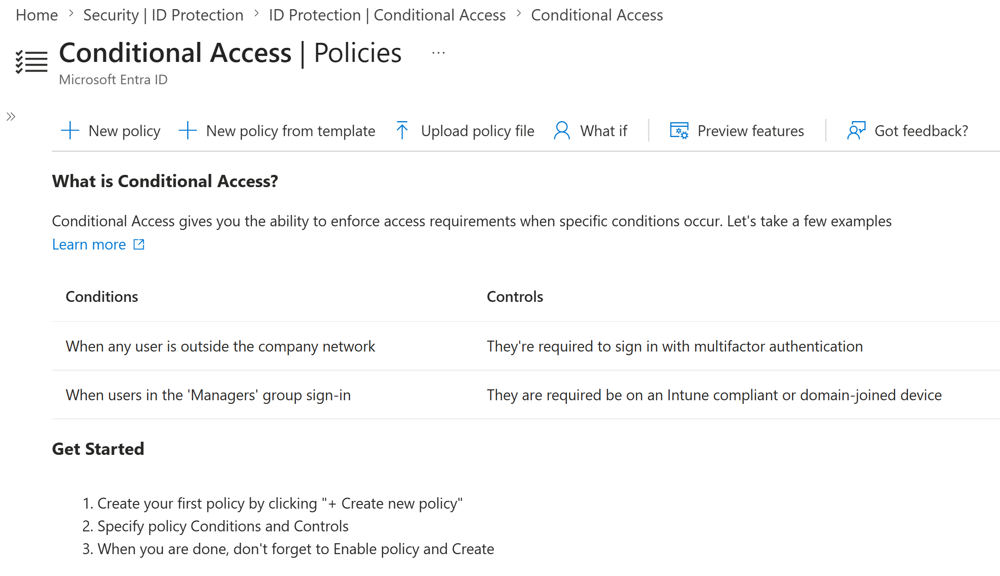
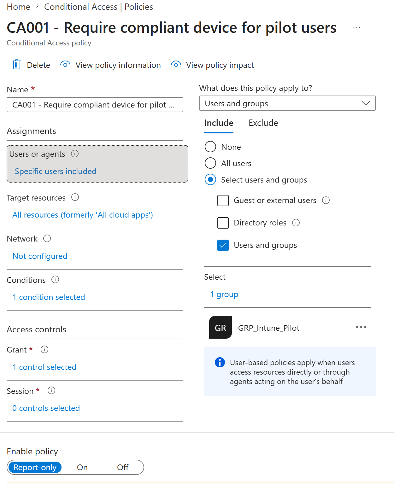
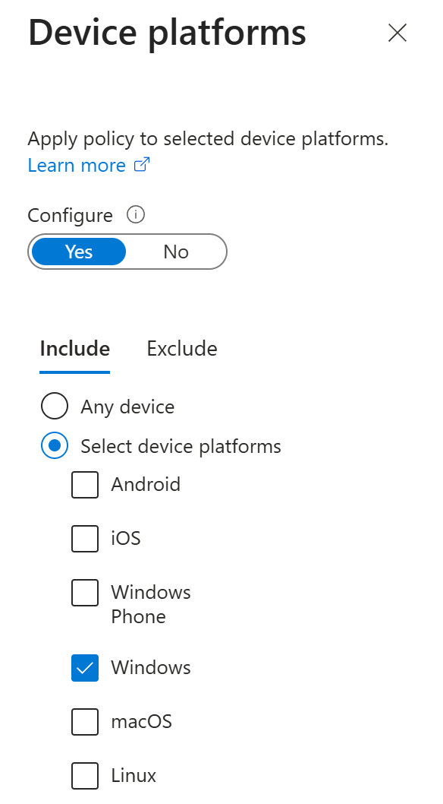
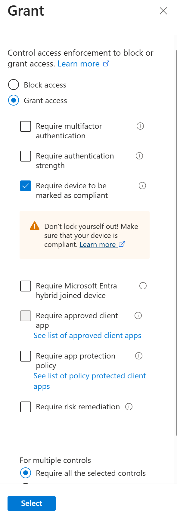
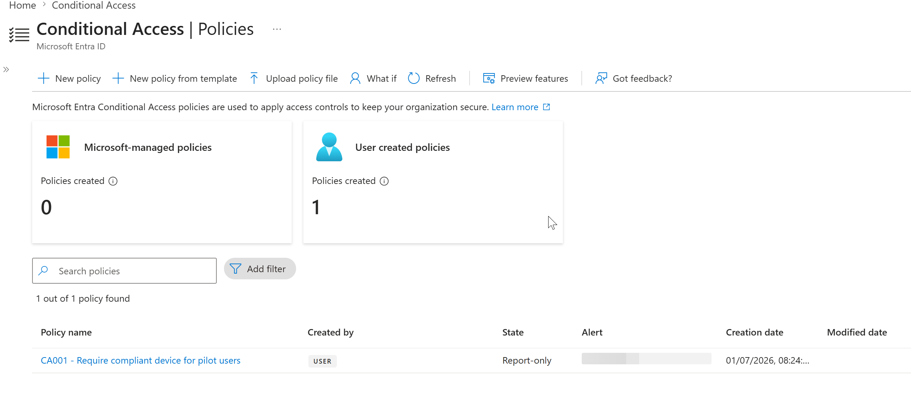
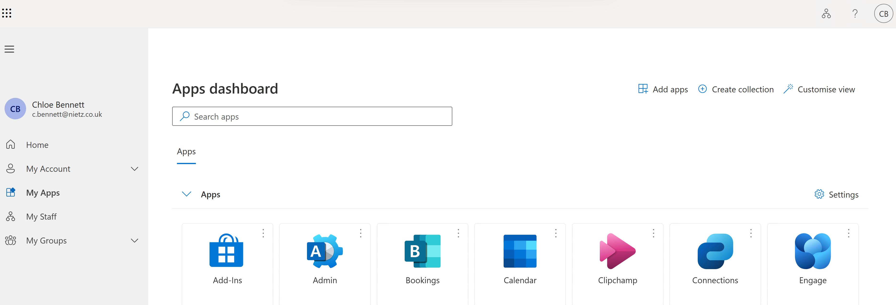
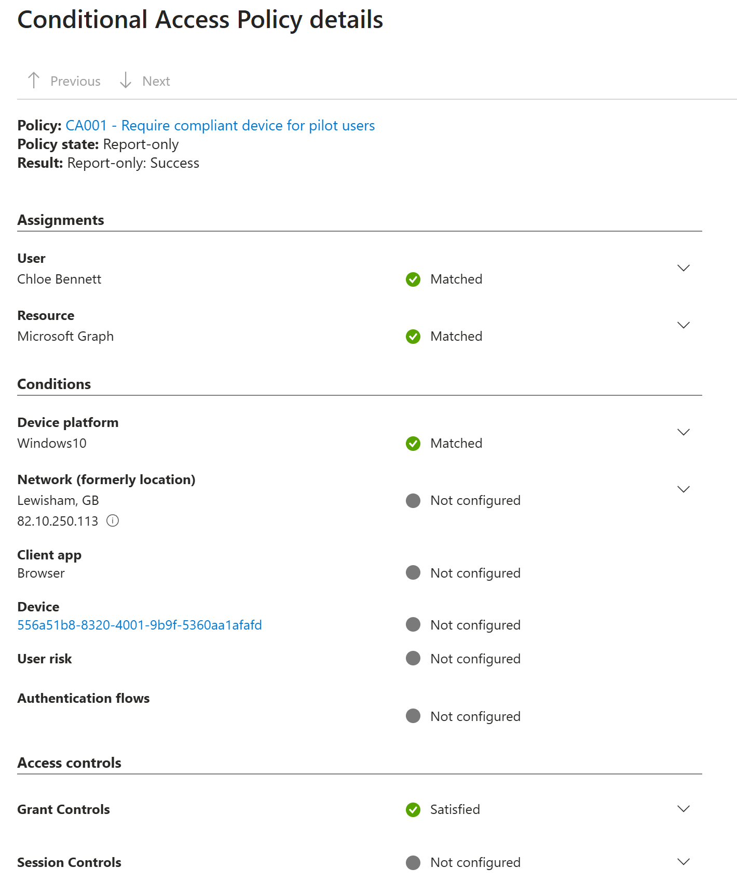
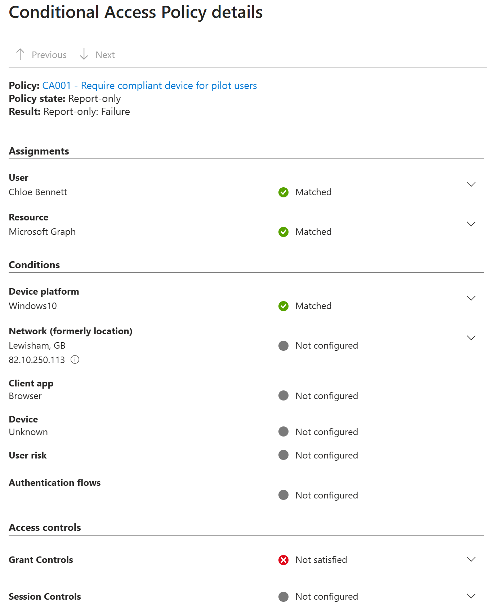

Lab 18: Conditional Access Pilot
Created a report-only Conditional Access pilot that used Intune compliance as an access signal, targeted Microsoft cloud resources for the Windows pilot group and validated the expected results for compliant and unmanaged devices.
Overview
Lab 17 established a Windows compliance policy for the Intune pilot devices. This lab used that compliance result in Microsoft Entra Conditional Access so the pilot could evaluate compliant-device access decisions before any live enforcement was applied.
The policy remained in Report-only mode throughout the lab. This allowed the access impact to be validated safely in Entra sign-in logs without blocking pilot users or risking an administrator lockout.
Objective
The objective was to create and validate CA001 - Require compliant device for pilot users, a pilot Conditional Access policy that applies to GRP_Intune_Pilot, targets all Microsoft cloud resources, applies to Windows device platforms, and requires the device to be marked as compliant.
Environment
| Component | Value |
|---|---|
| Company | Nietz Ltd |
| Microsoft 365 / Entra domain | nietz.co.uk |
| On-premises AD domain | corp.nietz.co.uk |
| Conditional Access policy | CA001 - Require compliant device for pilot users |
| Policy state | Report-only |
| Pilot group | GRP_Intune_Pilot |
| Pilot user | Chloe Bennett - c.bennett@nietz.co.uk |
| Compliant test device | CL2 - Microsoft Entra joined and Intune compliant |
| Unmanaged test device | Windows home PC browser session |
| Target resources | All resources, formerly All cloud apps |
| Device platform scope | Windows |
| Grant control | Require device to be marked as compliant |
| Previous lab dependency | Lab 17: Device Compliance Policy Pilot |
Configuration
1. Conditional Access Starting Point
I confirmed the Conditional Access policies area before adding the new pilot policy. This provided a clean baseline for the user-created Conditional Access policy introduced in this lab.

2. Pilot Policy Summary
I created CA001 - Require compliant device for pilot users and assigned it to GRP_Intune_Pilot. The policy targeted all Microsoft cloud resources and stayed in Report-only mode for controlled evaluation.

3. Windows Platform Scope
I scoped the device platform condition to Windows only. This matched the current pilot estate, where both the compliant CL2 device and the unmanaged test device were Windows devices.

4. Compliant Device Grant Control
I configured the grant control to require the device to be marked as compliant. I did not combine this with MFA, hybrid join, approved client app, app protection, or risk controls in this pilot lab.

5. Report-only Policy Creation
I created the CA001 policy and confirmed it appeared in the Conditional Access policy list with a Report-only state.

Validation
1. Compliant Device Sign-in
I signed in as Chloe Bennett from CL2, the cloud-native Microsoft Entra joined and Intune-compliant Windows pilot device.

2. Compliant Device Report-only Success
I reviewed the Chloe Bennett sign-in event in Microsoft Entra sign-in logs and confirmed that CA001 evaluated successfully for the compliant CL2 device. The grant controls were satisfied.

3. Unmanaged Device Report-only Failure
I reviewed a Chloe Bennett sign-in from an unmanaged Windows home PC browser session and confirmed that CA001 would have failed access if the policy had been enforced. The device appeared as unknown and the compliant-device grant control was not satisfied.

Key Technical Outcomes
This lab demonstrated how Microsoft Entra Conditional Access can use Intune compliance as an access control signal. I configured a pilot policy, scoped it to a controlled group, limited it to Windows devices, used a compliant-device grant control, and validated the expected access impact through Report-only sign-in log evidence.
Summary
- I created
CA001 - Require compliant device for pilot users. - I assigned the policy to
GRP_Intune_Pilot. - I targeted all Microsoft cloud resources and scoped the pilot to Windows device platforms.
- I configured the grant control to require the device to be marked as compliant.
- I kept the policy in Report-only mode to avoid enforcement risk.
- I validated that Chloe Bennett on compliant device
CL2satisfied the policy. - I validated that an unmanaged Windows home PC sign-in would fail the compliant-device requirement if enforcement was enabled.